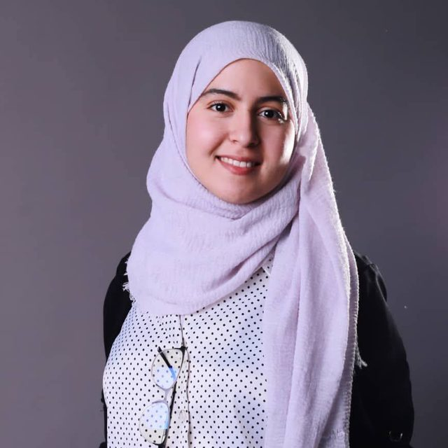
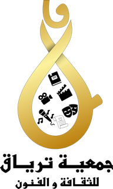

من نحن
من النواة إلى الأمة.
يعمل مختبر نوات للذكاء الاصطناعي على جعل الثقافة في الذكاء الاصطناعي والمهارات الرقمية العملية في متناول الشباب الجزائري — ليصبحوا صنّاعاً للتكنولوجيا لا مستهلكين فقط.

تعرّفوا على المؤسسة
أمينة بن الوناس
أنا أمينة بن الوناس، قيادية شبابية جزائرية ومربية ومنسقة مشاريع، بتكوين في الحضارة والأدب الإنجليزي وخبرة في التعليم وتمكين الشباب والتواصل والتطوير المؤسساتي. عملت مع منظمات ومبادرات شبابية تركز على القيادة وتنمية المهارات والثقافة والانخراط المجتمعي، إلى جانب تدريس اللغة الإنجليزية وتدريب الشباب على التواصل والتحدث أمام الجمهور.
أنا مؤسسة مختبر نوات للذكاء الاصطناعي، وهي مبادرة تعمل على جعل الثقافة في الذكاء الاصطناعي والمهارات الرقمية العملية في متناول الشباب الجزائري. أؤمن بخلق فرص يتعلم فيها الشباب ويجرّبون ويتواصلون ويحوّلون أفكارهم إلى مشاريع حقيقية.
تهمّني بشكل خاص القيادة الشبابية والتعليم والذكاء الاصطناعي وتمكين المرأة والتعاون الدولي وبناء مبادرات عملية ذات أثر حقيقي. أؤمن بالتعلّم المستمر، والبدء بما هو متاح، وتحويل الأفكار إلى أفعال.
من وراء هذا العمل
نوات × جمعية ترياق
مختبر نوات للذكاء الاصطناعي
برنامج شبابي للذكاء الاصطناعي مقره بسكرة، الجزائر. يقدّم مدرّبون أقران ورشات تطبيقية حول ChatGPT وClaude وGoogle AI Studio.

جمعية ترياق — شريك
جمعية للثقافة والفنون في بسكرة، تنظم مبادرات شبابية وتدريبات حول دورة المبادرة. اقترحت ترياق ورشة «من مستخدمين إلى صنّاع للذكاء الاصطناعي».
تواصلوا معنا
لنبنِ معاً.
جمعية شريكة، مدرّب، مموّل، أو مجموعة شبابية لديها فكرة؟ راسلونا أو انضموا إلى مجتمعنا وتابعونا.
انضموا إلى مجتمعنا على واتساب
امسحوا الرمز بكاميرا واتساب في هاتفكم.